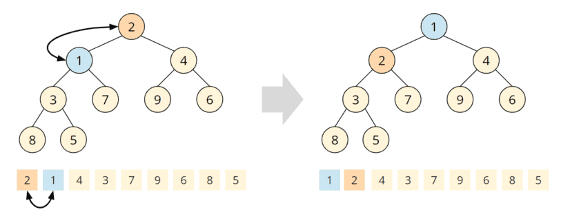

Cooperative Pathfinding
“à la StarCraft”
Algorithmic Complexity, Game AI, and Optimization Strategies
In real-time strategy games like StarCraft, moving dozens of units in real time without collision, lag, or chaotic behavior is a non-trivial problem. This article revisits a grid-based cooperative pathfinding experiment I first explored in 2022.
1. Classical Pathfinding Recap
1.1 Dijkstra's Algorithm
- Finds shortest paths from a source through a weighted graph.
- A priority queue can select the node with the lowest current cost.
- With a binary heap, the usual bound is \(O((V+E)\log V)\), often written \(O(E\log V)\) for the sparse graphs relevant here.
1.2 A* Algorithm
A* makes Dijkstra goal-directed by adding a heuristic estimate:
\[ f(n)=g(n)+h(n) \]- \(g(n)\): known cost from the start node to \(n\).
- \(h(n)\): estimated cost from \(n\) to the goal.
- \(f(n)\): estimated total path cost through \(n\).
For a four-connected grid, Manhattan distance is a natural heuristic:
\[ h(a,b)=|a_x-b_x|+|a_y-b_y| \]1.2.1 The Naive Approach
Here is the analysis of the A* loop when using an unsorted list for
openList and closedList, a very rudimentary
data structure. We will see later that this approach suffers in a
cooperative setup because of the many recalculations we may need.
function FindPath(start, end):
initialize every grid node
openList ← { start }
closedList ← ∅
while openList is not empty:
current ← node in openList with minimum fCost
if current == end:
return reconstructPath(end)
remove current from openList
add current to closedList
for each neighbor of current:
if neighbor in closedList:
continue
if not neighbor.walkable:
continue
tentativeG ← current.gCost + distance(current, neighbor)
if tentativeG < neighbor.gCost:
neighbor.parent ← current
neighbor.gCost ← tentativeG
neighbor.hCost ← heuristic(neighbor, end)
neighbor.fCost ← neighbor.gCost + neighbor.hCost
if neighbor not in openList:
add neighbor to openList
Let \(N\) be the total number of grid cells.
- Initialization of the grid: \(O(N)\).
- Up to \(N\) main-loop iterations.
- Finding the minimum-\(f\) node by linear scan: \(O(N)\).
- Removing from an array-backed list may also cost \(O(N)\).
- At most four neighbor checks on a four-connected grid: \(O(1)\).
A more rigorous derivation
Let iteration \(j\) be the \(j\)-th removal from open.
Define \(S_j=|open|\) just before the \(j\)-th scan.
Let \(\alpha\) be the comparison cost per element,
\(\beta\) the removal / shifting cost per element,
and \(\gamma\) the bounded neighbor-check cost.
In the worst case every node enters open before it is
removed, so \(S_j\leq j\). There are at most \(N\) iterations:
Reconstructing the path is at most \(O(N)\), which is dominated by the quadratic search. Space complexity remains \(O(N)\).
1.2.2 The Standard Approach
The naive approach does not hold up once we put it in the context of multi-agent cooperation. The important change is not A* itself, but the data structure used for the open set.
Replacing the unsorted list with a binary min-heap / priority queue gives:
\[ \text{extract-min}=O(\log N) \qquad \text{insert/update}=O(\log N) \]A grid has bounded connectivity, so \(E=O(N)\). For this implementation, the practical bound becomes:
Min-heap / priority queue: \(O(N\log N)\)
This matters much more once many units are requesting paths.

2. The Complexity of Group Pathfinding
A fast A* search does not automatically produce a fast RTS movement system. Once units become dynamic obstacles for one another, the important variable becomes how often we are forced to search again.
- \(N\): total number of grid cells.
- \(P\): length of the current path in grid steps.
- \(R\): number of full blocked-cell path recalculations.
The original movement prototype can be understood through three main
methods: updateMovement(), moveTo(), and
handleBlockedCell().
2.1 updateMovement()
public void updateMovement() {
if (!isMoving) return;
if (path == null || currentIndex >= path.size()) {
return;
}
nextNode = path.get(currentIndex);
if (isBlocked(...) && currentIndex > 0) {
handleBlockedCell(nextNode);
return;
}
float distance = calculateDistance(...);
if (distance <= 2.0f) {
snapToTarget(...);
currentIndex++;
} else {
moveX();
moveY();
syncHitbox();
}
}Aside from the occasional blocked-cell handler, every operation is fixed-cost.
2.2 moveTo()
public void moveTo(float newX, float newY, Camera camera) {
start = ...;
end = ...;
if (map.intArr[...] == WALL_TOKEN) {
return;
}
path = pf.FindPath(map.intArr, start, end);
if (path == null || path.isEmpty()) {
return;
}
currentIndex = 0;
isMoving = true;
}Everything except the path search is constant-time.
2.3 handleBlockedCell()
private void handleBlockedCell(Vector2Int blockedNode) {
if (!isWaiting) {
isWaiting = true;
blockStartTime = ...;
} else {
long elapsed = ...;
if (elapsed > 1000) {
start = ...;
path = pf.FindPath(map.intArr, start, end);
if (path == null) {
stopMovement();
}
isWaiting = false;
currentIndex = 0;
}
}
}During ordinary waiting this remains \(O(1)\). Once the timeout triggers a full rebuild of the path, we pay for A* again.
2.4 End-to-End Movement Cost
For one move command:
\[ \underbrace{O(N\log N)}_{\text{initial path}} + \underbrace{O(P)}_{\text{movement}} + \underbrace{R\cdot O(N\log N)}_{\text{recalculations}} \]In the common case, \(R\) is small:
\[ O(N\log N+P) \]In the pathological case where almost every path step causes another full search, \(R\approx P\). With the simplifying worst-case assumption \(P=O(N)\):
\[ O(PN\log N+P)=O(N^2\log N) \]3. Cooperative Pathfinding
To keep \(R\), the number of full A* replans, small in practice, units need to coordinate before they physically collide. A reservation table turns future occupancy into part of the planning problem.
3.1 Reservation-Table Pathfinding
Ordinary grid A* searches positions:
\[ (x,y) \]Cooperative pathfinding adds a time dimension:
A planned path can now also be interpreted as a sequence of future reservations:
\[ (x_0,y_0,t_0), (x_1,y_1,t_1), (x_2,y_2,t_2), \ldots \]The basic idea is simple:
- Reserve each grid cell for the timestep in which it will be occupied.
- Let later units treat conflicting reservations as unavailable.
- Allow a unit to wait instead of immediately triggering a full replan.
- Replan only when the reservation plan can no longer be followed.
| Time | Agent A | Agent B |
|---|---|---|
| \(t_0\) | (2, 1) | (0, 3) |
| \(t_1\) | (2, 2) | (1, 3) |
| \(t_2\) | (2, 3) | wait |
| \(t_3\) | (2, 4) | (2, 3) |
Two agents may use the same spatial cell. The important constraint is that they do not reserve it at the same time.
Waiting is a valid action
A cooperative path does not need to move to a new cell at every timestep:
\[ (x,y,t)\rightarrow(x,y,t+1) \]A one-step wait may resolve a transient conflict without replacing the entire spatial path.
Cell and edge conflicts
Reserving cells prevents two units from occupying the same cell at the same time:
\[ A(t)=B(t) \]We also need to prevent two units from swapping positions through one another during the same timestep:
\[ A:u\rightarrow v \qquad B:v\rightarrow u \]3.2 Delay or Throttle Replanning
The original prototype already waited before performing another full A* search. This can be tuned based on the blocker:
- A moving blocker may justify waiting longer.
- A static blocker may justify a one-time replan.
3.3 Local Detour Before Full Replanning
Another intermediate strategy is to try a small local search before invoking full-grid A*:
- Search a small \(5\times5\) or \(7\times7\) region.
- Splice a successful local detour into the current path.
- Use global A* only if the local detour fails.
The objective remains the same: keep \(R\) small.
3.4 Other Directions
D* Lite
Dynamic search methods can repair an existing path when a localized part of the environment changes, rather than discarding all previous search work.
Hierarchical Pathfinding (HPA*)
Large maps can be divided into clusters. A high-level route is planned across the abstract cluster graph and refined locally as the unit moves.
4. Conclusion
The progression of this experiment is straightforward:
Grid → A* → Min-Heap → Multi-Agent Conflicts → Replanning → Reservations
The central complexity result remains:
The optimization problem is therefore not only “How do we make A* faster?” It is also:
How do we prevent units from unnecessarily asking A* the same expensive question again and again?
Reservation-based cooperation attacks that second problem directly.
This model is intentionally discrete and grid-centric. It coordinates who may occupy a cell and when, but does not by itself provide fluid crowd movement, formation behavior, variable unit footprints, or continuous local avoidance. Those belong to another movement layer.